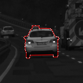
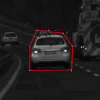

Adjust the outline of the object to make it as accurate as possible, like in the example below.
Interface Instructions
Remember to accept the hit before you proceed!
Move the slider on the left or the mousewheel to zoom in and out of the image.
Once you have zoomed in, the image can be moved via drag and drop.
Press the contrast button on the left to change contrast (currently disabled).
Press the reset button on the left to reset the annotation.
You should zoom in and change the contrast of the image to see details clearly.
If you cannot see a part of the object (e.g. because it is hidden behind another object, or othwerwise concealed), put the outline to where you think it should be, based on the reference image on the right.
Move individual points, or move or stretch the outline by dragging on the cross in the middle, or the controls on the sides.
Please remember that we need a very high accuracy, so please zoom in often ;)
Press the submit button at the top of the page to submit your results.
Here is an example of acceptable work and bad work:
This is good work and will be accepted:

Note how even the smallest details are annotated.
This is bad work and will be rejected:

The outline is only loosely marked.
Instructional video
You can also watch the following video (it is just two minutes), where you can see the webinterface in action. Please watch in HD720p and full screen mode:
Please take our examples as a lower accuracy limit of your work! In case you do this task for the first time and want to practice: You will always find a few HITs in the Mechanical Turk Sandbox. Search for "Image Segmentation".
Further Hints and Troubleshooting
For some images you can change the contrast, if the image is too dark.
Unfortunately some images might not be available in colors.
If the image is not displayed, please reload the page.
Currently this is not working with Internet Explorer. Please try Mozilla Firefox.
Why Solve This HIT?
We are trying to find pixel positions in image sequences (videos) which can be found again in subsequent frames (time steps).
A first step to solve this problem is to track coherent regions in the video.
This is called segmentation.
Scientists have been trying to solve this problem automatically for decades, but it seems very difficult for the computer to solve this task.
Yet, researchers have found some ways to do feature tracking and they would like to know if they can outsmart us humans.
Therefore, we now ask you to outsmart computers by finding the best possible features in a first image and their respective correspondences in a second image.
Once we know such correspondences we can do a lot of fun things!
Have a look here,
here and
here to get a rough idea ;)
(Please note that we have not created these videos and are not responsible for their contents. The owners of these videos are the respective companies - Microsoft, Adobe and Apple!)
Problems?
We are be happy to receive suggestions for improvements or any other feedback you want to share!
Please use the text form you find below the annotation tool.